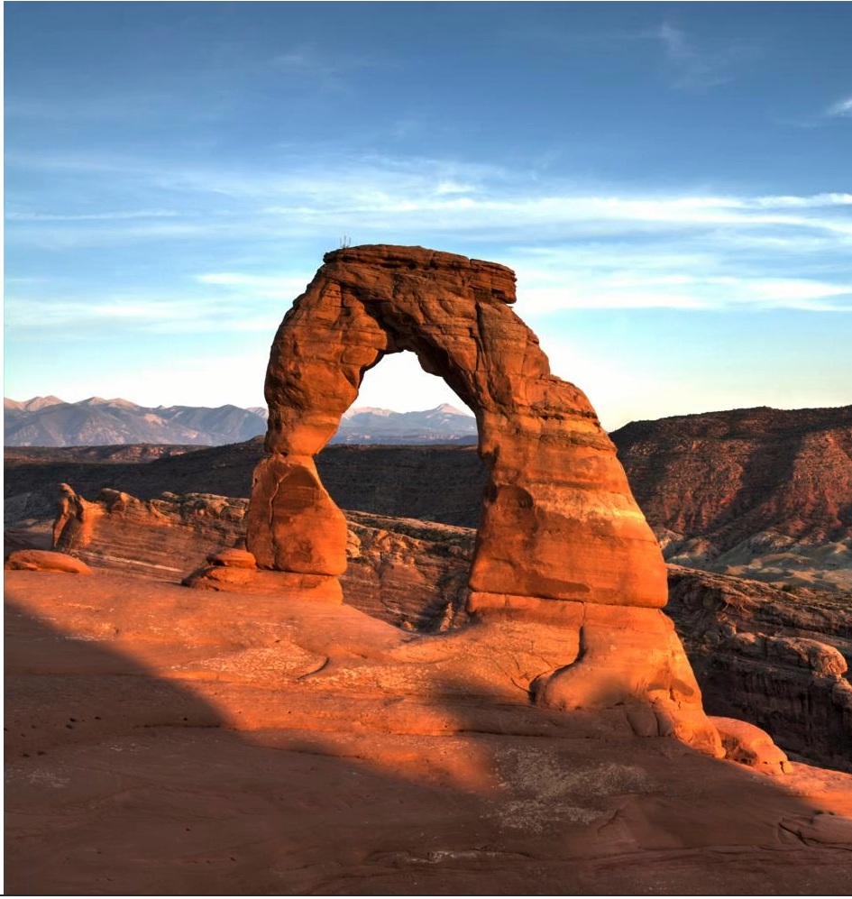
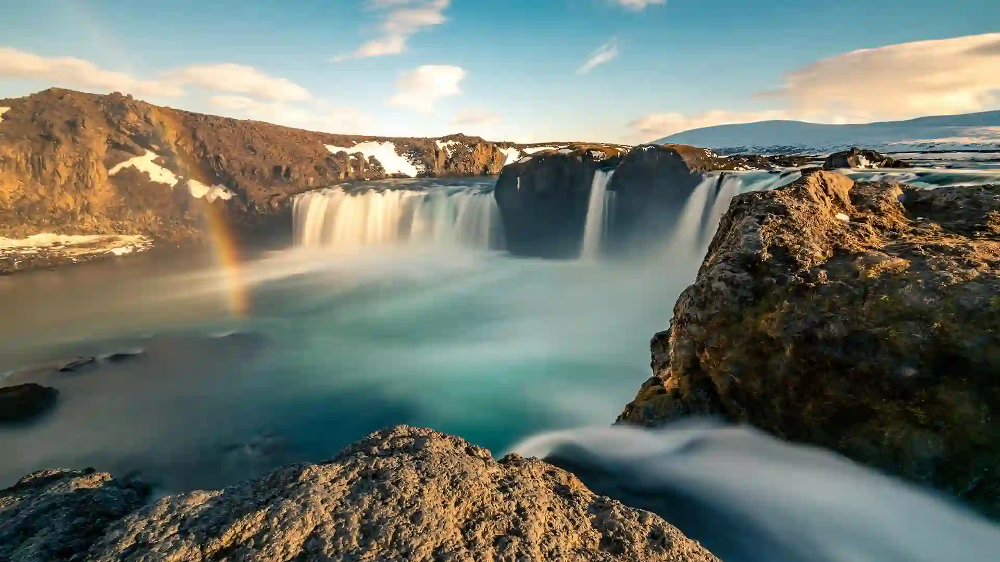

with: le da el ancho ala imagen
height: cambia a la altura de la imagen
Archivo jpeg son imagenes compuestas por pixeles
Los archivos .svg estan construidos usando vectores
Las imagenes svg pensan poco y se cargan en las paginas web mas rapido

GIF, que es la sigla de “Graphics Interchange Format” (Formato de intercambio de gráficos), es un formato de archivo rasterizado diseñado para imágenes relativamente simples que aparecen, en su mayoría, en el Internet. Cada archivo admite un máximo de 8 bits por pixel y pueden contener 256 colores indexados

Waterfall-in-Iceland